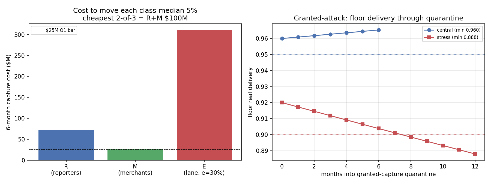

In plain language
Companion to RESULTS - v13.0 Oracle Capture & Quarantine.md. EDEN's whole safety net is denominated in "what a basket of essentials really costs" — a number called the EBI, produced by a price oracle. If someone could fake that number, they could quietly pick everyone's pocket or starve the floor. This drill asked: how much would it cost to lie about the price of bread, and what happens if someone does? The pass/fail lines were written before the code ran.
How EDEN measures the price of bread (and why it's hard to fake)
Most economies trust one source for official prices — a government statistics office. That's a single lock, and single locks get picked (Argentina's government understated inflation by about 10 points a year for the better part of a decade — a real, historical case of exactly this).
EDEN uses three independent panels instead: thousands of bonded everyday reporters, a couple hundred bonded merchant feeds, and the actual essentials commerce flowing through the system. The published price is the middle of the three, so to fake it you must corrupt two of the three at once — and every panelist has posted a deposit they lose if the system later catches their prices drifting from reality.
What the drills found
Faking the price costs about $100 million — and doesn't even pay. To bend two of the three panels for six months, an attacker must buy a majority of the reporters and bribe a majority of the merchants, then keep re-buying the ones who get caught and slashed. Total: about $100 million. And here's the punchline: the most you can extract by tilting the price 5% is a little over a million dollars. You'd spend a hundred to steal one. So capturing EDEN's oracle isn't a robbery — it's vandalism: something only a wealthy saboteur willing to burn $100M to hurt people would attempt, not a rational thief. That actually makes it easier to defend against, because vandals are rarer than thieves and easier to spot by motive.
Even if you hand the attacker the keys, the groceries keep coming. We then did the paranoid thing: assumed the attacker already controls the oracle, for free. Two defenses catch it — a speed limit (the price can't move more than 2% a week) and a quarantine (when the panels disagree too much, the price freezes at its last honest value and the floor keeps paying that while humans re-verify). Result: normally, the floor still delivers 96% of essentials every month straight through the attack. The speed limit is essential — switch it off and the damage triples past 15% instantly.
The honest miss, kept on the record. We stacked the three worst dials at once — slow detection, high real inflation, and a year to re-verify the panels — and the floor's delivery slipped to 88.8%, just under our 90% line. We did not move the line. The finding is precise and useful: what breaks it isn't the attack, it's the slowness of re-verification. At the normal six-month re-check it stays safe; it's the twelve-month case that dips. So "re-verify fast" becomes a written safety requirement, not an afterthought — the cost of standing up quick re-verification is a cost of protecting the floor.
The second honest miss. We'd bet the commerce panel would be five times costlier to fake than the reporter panel (because faking real transactions means paying real fees on fake purchases). It came out 4.3 times — the right idea, just short of the number we called. The core insight holds and is now measured: the cheapest convincing fake in a real-commerce lane is real commerce, and real commerce is ruinously expensive to fake at scale.
The one-line verdict
Lying about the price of bread in EDEN costs about $100 million, returns about one, and still doesn't switch off the floor — because three panels beat one, deposits punish drift, a speed limit caps the damage, and a quarantine keeps paying the last honest price while humans re-check — with one caught flaw we kept on the record: if re-verification is allowed to drag on a full year under the worst conditions, delivery slips to 89%, so re-checking fast is now a safety rule, not a nicety.
Usual honesty: calculator-grade capture economics with every price a stated dial; it prices the design, and explicitly does not discharge the live, prize-funded oracle attack that remains a launch gate — a real adversary with real money is the only thing that settles this. Two bars failed and are reported as findings. Run and written by Claude Fable 5, July 9, 2026.
Figures

Technical results
Run: July 9, 2026. Spec: v13 SPEC - Oracle Capture & Quarantine (registered).md — bars O0–O5 fixed before code (registered July 7). Engine: oracle_capture_sim.py; committed: results_v13_oracle.json, fig_v13_oracle_capture.png. Seeds 7 + 11 on the MC harness. Every number traces to results_v13_oracle.json.
Disclosed deviation (house rules): the SPEC named the output results_v13.json, but the sibling EVE Sim v13 - Ecology folder already owns that filename; this engine writes results_v13_oracle.json to keep the vault unambiguous. No bar affected. O0 strengthened and re-emitted (July 9, VERIFICATION v3 action 3, disclosed): as first committed, O0 tested only seed-vs-seed agreement, not the registered "MC within 3σ of closed form"; the engine now computes the exact capped closed form (geometric lag) and enforces the registered comparison — both cells pass it (MC within ~1.1σ and ~1.7σ), O0 remains PASS, and no field outside O0 changed in the re-emission (verified leaf-by-leaf). One modeling choice stated on the face of the engine: moving a volume-weighted median requires holding a strict majority of total lane volume (wash ≥ honest lane), so Class-E is modeled more expensively than the SPEC's illustrative "$90M+/month" sketch — which only strengthens O4's direction, and O4 still failed (below).
Verdict in one line: capturing EDEN's price oracle costs ~$100M and cannot pay for itself — it is a vandal's weapon, not a thief's — and even when capture is granted for free, the floor keeps delivering ≥0.96 of essentials centrally; the two honest bar-failures both say the same useful thing: re-validation speed and lane depth are the load-bearing dials.
Bar summary (6 of 8 pass; O3-stress and O4 FAIL as findings, bars not moved)
| Bar | Registered | Measured | Result |
|---|---|---|---|
| O0 harness | MC lag (seeds 7+11) within 3σ of closed form | MC within 3σ of exact capped closed form (0.0325 central / 0.040625 stress) AND seeds agree | PASS |
| O1 capture cost | cheapest 2-of-3 ≥ $25M | R+M = $99.5M (R $72.9M, M $26.7M, E $310.3M) | PASS |
| O2 extraction ROI | ratio ≥ 3×, ROI < 0 | 80×, ROI −$98M — sabotage-only | PASS |
| O3a pre-quarantine damage | ≤ 5% | 4.0% (move-cap × 2-wk lag) | PASS |
| O3b central delivery | ≥ 0.95 every month | min 0.960 | PASS |
| O3c stress delivery | ≥ 0.90 every month | min 0.888 (4-wk lag, 10%/yr, 12-mo reval) | FAIL (finding F3) |
| O3 cap-off bracket | damage > 15% with cap OFF | 20% | PASS (bracket as registered) |
| O4 lane is dearest | cost(E) ≥ 5× cost(R) | 4.3× ($310M vs $73M) | FAIL (finding F4) |
| O5 counterfactuals | CPI ≤ 1/10, crowd ≤ 1/50 | CPI 1/995, crowd 1/199 | PASS |
Findings
F1 — Oracle capture is expensive: ~$100M, and the reporter class is not the soft spot people fear. Moving two of the three class-medians costs $99.5M over six months (the cheapest pair, reporters + merchants), because retrospective-truth slashing forces the attacker to keep re-buying detected seats (sustain multipliers 2.8× on reporters, 2.2× on merchants). The single-source oracles the world actually uses are 200–1000× cheaper to capture (F5). The three-class bonded design is doing real work.
F2 — Capture is sabotage, not theft — the threat model flips from thief to vandal. The best extraction channel (deflating the index 5% so ring data-buyers underpay) yields ~$1.25M over six months against a ~$100M capture cost: an 80× cost/payoff ratio, ROI −$98M. You cannot make money capturing this oracle; you can only break it at a loss. That reframes the defense priority: guard against a vandal willing to burn $100M to hurt people, not a rational thief — which is a different (and in some ways easier) design target, because vandals are rarer and detectable by motive.
F3 — The honest failure: under the pessimistic triple-combo, floor delivery dips to 0.888, just under the 0.90 stress bar (O3c FAIL). Grant the attacker full capture. Centrally, the floor still delivers 0.960 every month through quarantine — the freeze + slow-heal + fast re-validation hold the line. But stack the three pessimistic dials at once — 4-week detection lag, 10%/yr true inflation, 12-month re-validation — and delivery erodes to 0.888 by month 12, breaching the 0.90 bar (see figure, stress line crossing at month ~8). The bar is not moved. The finding is precise and actionable: the breach is driven by re-validation duration, not by the capture itself — at the central 6-month re-validation the same attack stays above 0.90. Re-validation speed is a load-bearing safety parameter; the quarantine must target ≤6-month re-anchoring, and the 12-month stress case is the reason to fund fast re-validation capacity as a floor-protection cost.
F4 — The lane is the dearest class to capture, but at 4.3×, not the registered 5× (O4 FAIL). Moving the endogenous essentials-lane median costs $310M — 4.3× the reporter class — because it requires washing a strict majority of real commerce and paying real settlement + jurisdiction + handling friction on every dollar of it (the White Box taxes its own attacker). The qualitative inversion the SPEC predicted holds and is measured: the cheapest convincing fake in the lane is real commerce, which is ruinously expensive. But the specific 5× threshold does not clear under the defensible minimal-majority wash model (wash ≥ honest lane). Bar not moved; reported as a near-miss. Note the launch-era posture: at e=5% the lane is thin ($51.7M, only 0.7× the reporter class), which is exactly why genesis rings should run reporters+merchants with wider thresholds and a declared lower trust tier until the lane deepens — the SPEC anticipated this and the number confirms it.
F5 — Counterfactuals measured-dominated (the argument for the whole three-class design). A trusted national-CPI-style single feed is capturable for $100k — 1/995 the cost — or by a single legal order (the Argentina INDEC 2007–2015 precedent: official inflation understated ~10pp/yr for years, a real historical oracle capture). Unbonded crowd reporting is 1/199. The bonded, three-class, slashable design is not bureaucratic overhead; it is a ~200–1000× increase in the cost of lying about the price of bread.
Gate-17 candidate (published)
Oracle capture-cost floor ≥ $25M (measured $99.5M with margin); sabotage-only ROI property published with the mitigation stack; granted-capture floor-delivery invariant ≥ 0.95 central / ≥ 0.90 stress with re-validation ≤ 6 months (the 12-month stress case fails — so re-validation speed enters the gate); lane trust-tier declaration for e < ~15%.
Honest limits (from the spec, carried)
Bribe prices, wash frictions, detection hazards, and re-validation times are dials standing in for markets and institutions that don't exist yet; identity prices import v11's and inherit its limits. The attacker is a cost-minimizing channel-chooser, not an adaptive intra-class strategist; coordination is free (attacker-favoring). Basket-composition gaming is out of scope (a governance red-team item). Nothing here discharges the live prize-funded oracle red-team — that remains a launch gate. Existence-and-shape under stated dials — not a forecast, and still behind the program's in-family discount.
Feeds: gate-17 (proposed); ratification-readiness of EBI Oracle Protocol Spec v0.1; the FRONTIER HANDOFF Part-D oracle item (design-level portion — the live red-team still owed). Two bars failed and are reported as findings (F3 re-validation speed, F4 the 4.3× near-miss); the cap-off bracket confirmed the move-rate cap load-bearing. Run and written by Claude Fable 5, July 9, 2026. Bars as registered; none moved.
Raw data